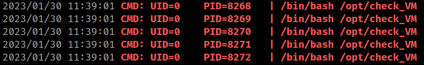

5.3 pspy32
1. Run the following on the victim's machine.
brad@crazymed:~$ ./pspy32
Output:

These lines are interesting.
2. Take a look at that script.
brad@crazymed:~$ cat /opt/check_VM
#! /bin/bash
#users flags
flags=(/root/root.txt /home/brad/user.txt)
for x in "${flags[@]}"
do
if [[ ! -f $x ]] ; then
echo "$x doesn't exist"
mcookie > $x
chmod 700 $x
fi
done
chown -R www-data:www-data /var/www/html
#bash_history => /dev/null
home=$(cat /etc/passwd |grep bash |awk -F: '{print $6}')
for x in $home
do
ln -sf /dev/null $x/.bash_history ; eccho "All's fine !"
done
find /var/log -name "*.log*" -exec rm -f {} +
The interesting line is “chown -R www-data:www-data /var/www/html”.